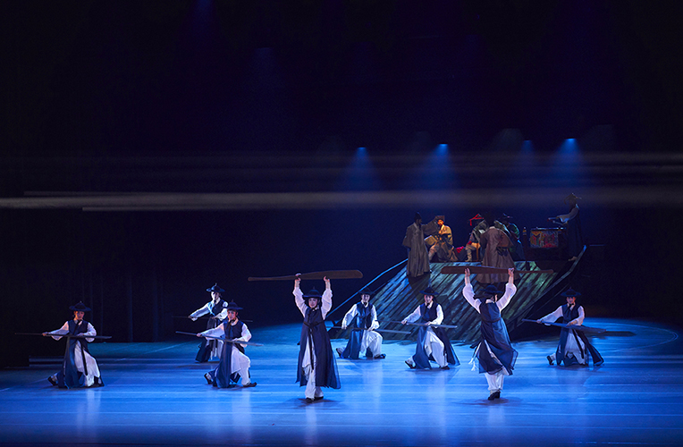
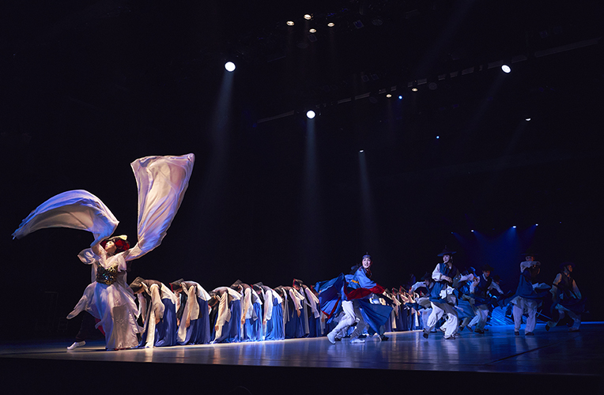
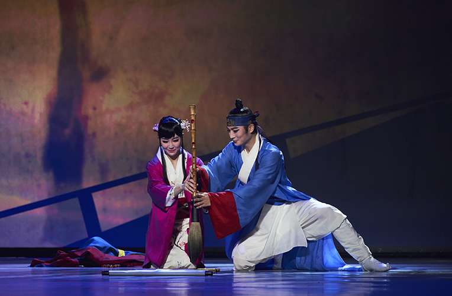

한류확산을 위한 국악공연 <춤, 조선통신사 -유마도를 그리다> 시즌Ⅱ
- 일시
- 5.3.(수) ~ 5.6.(토), 5.10.(수) ~ 5.13.(토) 주중 20:00 주말 15:00
- 장소
- 연악당
- 관람료
- S석 20,000원 A석 10,000원
- 출연진/연출진
- 국립부산국악원 국악연주단 기악단·성악단 예술감독 유경조 무용단 예술감독·안무 정신혜 원작자 강남주 연출 조주현 대본 천정완 작·편곡 김백찬 지휘 원영석 무대디자인 임일진 영상디자인 이수경 음향디자인 이수용 의상디자인 민천홍 조연출 서승진
- 관람연령
- 취학아동이상
부산의 역사문화콘텐츠, ‘조선통신사'를 그려낸 무용극
‘조선통신사’의 여정을 그려낸 소설 「유마도」(원작 강남주)를 주제로 통신사 사행길에 오른 무명 화가 변박이 그린 그림 ‘유마도’의 비밀을 파헤치는 무용극. 유네스코 세계기록유산 ‘조선통신사’의 역사적 의미와 조선시대 한국과 일본의 지속적 문화교류를 통한 양국의 문화적 화합을 새롭게 표현한다.
세부프로그램
프롤로그 제1장. 해신제 제2장. 항해 제3장. 조선통신사 에필로그. 유마도
* 공연내용과 일정은 사정에 따라 변경 될 수 있습니다.


